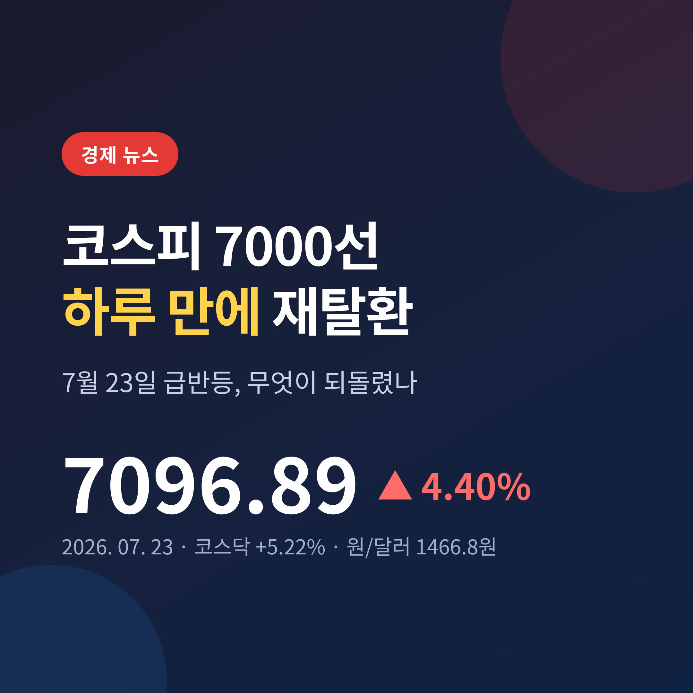
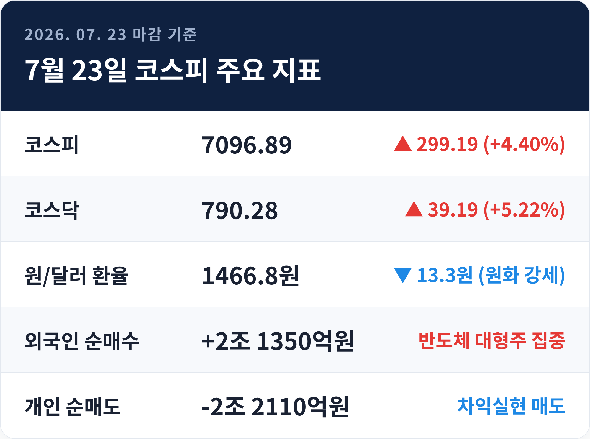
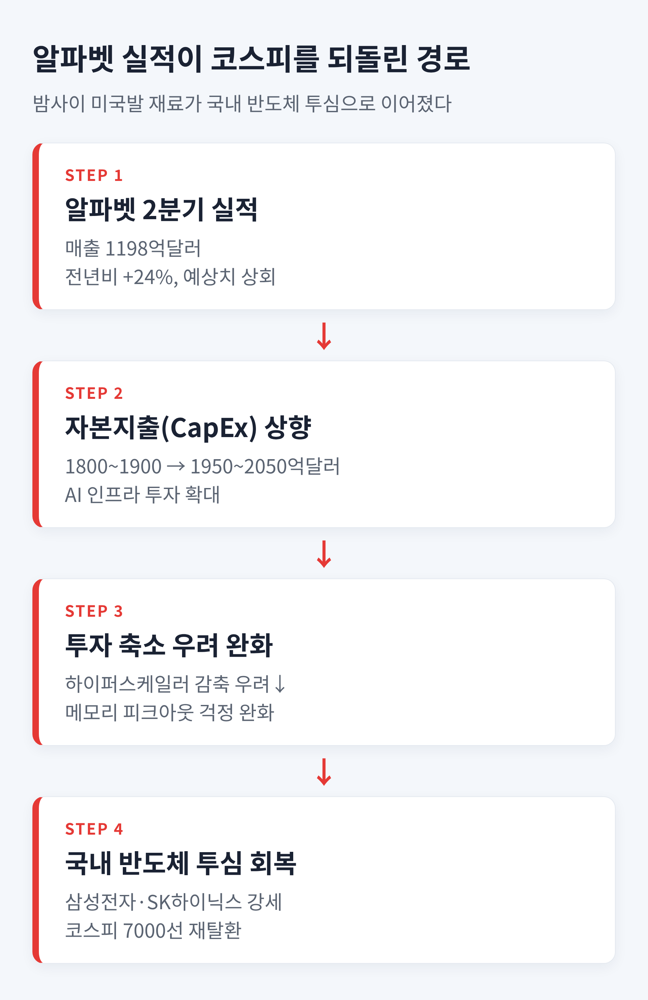
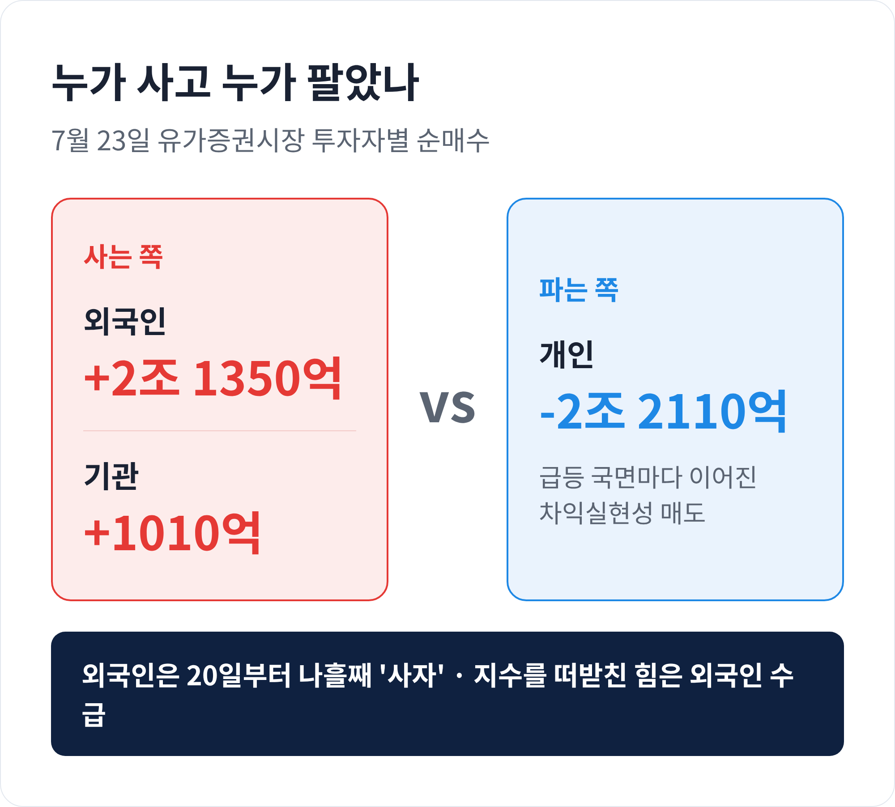
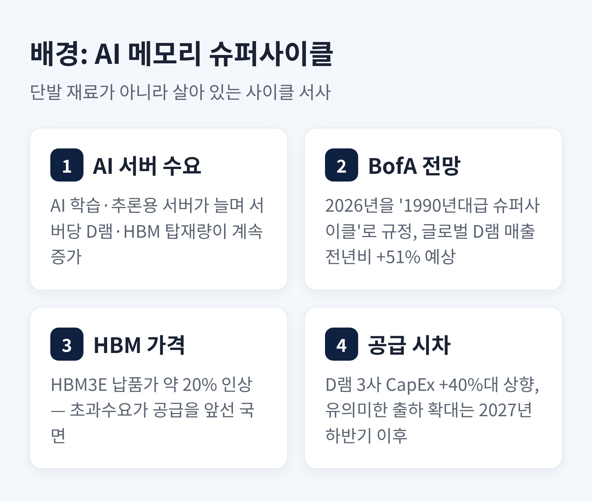
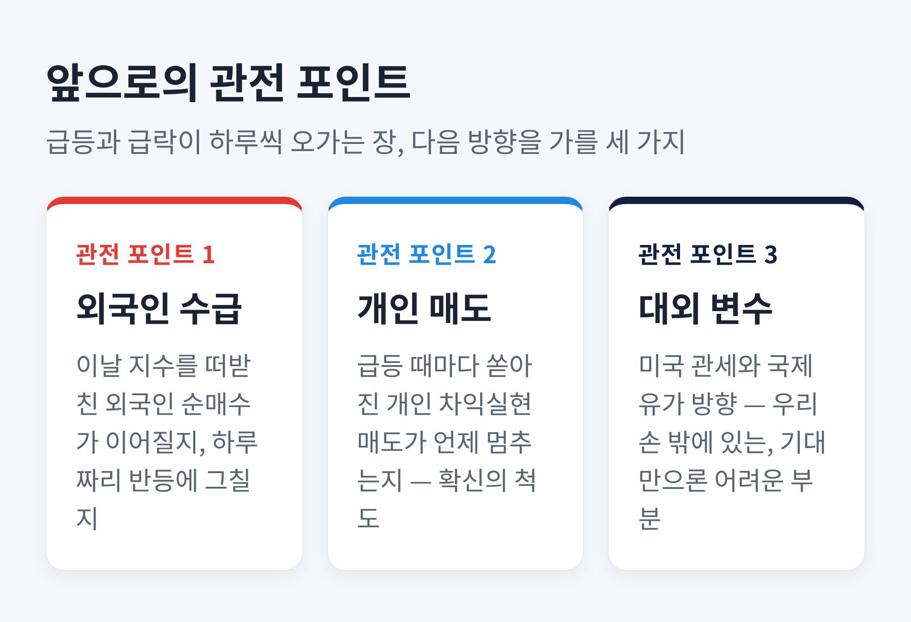

이번 글에서는 2026년 7월 23일 코스피가 하루 만에 7000선을 되찾은 과정을 정리해 보겠습니다.
바로 전날엔 장중 7100선을 뚫고도 6790선으로 밀려났던 지수입니다.
그 반납분을 하루 만에 되돌린 힘이 무엇이었는지 차근히 짚어 보겠습니다.
세 줄 요약
먼저 숫자부터 보겠습니다.
23일 코스피는 7096.89로 거래를 마쳤습니다. 전 거래일보다 299.19포인트, 4.40% 오른 값입니다.
5거래일 만의 7000선 회복입니다.
같은 날 코스닥은 더 뜨거웠습니다.
39.19포인트, 5.22% 오른 790.28로 마감했습니다.
원·달러 환율은 13.3원 내린 1466.8원이었습니다. 원화가 강해졌다는 뜻이고, 외국인 자금이 들어오기에 우호적인 환경이었습니다.
이 반등이 왜 눈에 띄는지는 하루 전과 비교하면 분명해집니다.
전날인 22일, 코스피는 개장 직후 매수 사이드카가 걸릴 만큼 급등해 장중 7166까지 올랐습니다.
그러나 뒷심이 부족했습니다. 상승분을 대부분 반납하고 6797.70에 강보합으로 마감했습니다.
예전 같으면 이런 실망 마감 다음 날은 조심스러운 흐름이 이어졌습니다. 이번엔 정반대였습니다.

무엇이 하루 만에 분위기를 뒤집었을까요.
답은 밤사이 미국에서 날아왔습니다.
구글의 모회사 알파벳이 22일(현지시간) 장 마감 뒤 2분기 실적을 내놨습니다.
매출은 1198억달러로 1년 전보다 24% 늘었습니다. 시장 예상치 1169억달러를 웃돈 성적입니다.
더 중요한 건 투자 계획이었습니다.
알파벳은 올해 자본지출(CapEx) 전망을 기존 1800억~1900억달러에서 1950억~2050억달러로 올려 잡았습니다.
이 대목이 국내 증시에 왜 힘이 됐는지 풀어 보겠습니다.
자본지출은 AI 데이터센터와 서버에 돈을 얼마나 쏟느냐를 보여주는 숫자입니다.
그 숫자가 줄어들면 서버에 들어가는 메모리 수요도 함께 꺾입니다.
시장이 그동안 걱정한 것이 바로 이 '투자 축소' 시나리오였습니다.
그런데 알파벳이 오히려 투자를 늘리겠다고 했습니다. 걱정의 근거가 하나 사라진 셈입니다.

기대는 곧바로 반도체 대형주로 옮겨붙었습니다.
삼성전자는 3.65% 올라 27만원에, SK하이닉스는 4.86% 올라 191만9000원에 마감했습니다.
프리마켓부터 동반 강세로 출발한 흐름이 정규장까지 이어졌습니다.
수급을 보면 이날 장의 성격이 더 또렷해집니다.
외국인이 약 2조1350억원, 기관이 약 1010억원을 순매수했습니다.
반대로 개인은 약 2조2110억원을 팔았습니다.
지수를 끌어올린 건 외국인과 기관, 물량을 받아 낸 건 개인이었던 셈입니다.
외국인의 매수는 이날 하루로 그친 것이 아닙니다.
20일부터 매수 우위를 이어와, 23일까지 나흘째 '사자'를 지켰습니다.
반도체 비중이 큰 코스피에서 외국인의 발걸음은 지수의 방향과 자주 겹칩니다.
그들이 반도체를 다시 담기 시작했다는 신호가, 이날 반등의 무게를 키웠습니다.
거래도 활발했습니다.
이날 유가증권시장의 거래대금은 약 26조6646억원, 거래량은 3억9232만주에 이르렀습니다.
지수가 오르는 날 거래까지 늘었다는 것은, 관망이 아니라 실제 매수세가 붙었다는 뜻입니다.
장중 한때 6900선까지 밀렸던 지수가 다시 상승폭을 키운 것도 이 외국인 매수가 버팀목이 됐기 때문입니다.

여기서 한 걸음 물러나 보겠습니다.
알파벳 실적은 하루짜리 재료일 수도 있습니다. 그러나 이날 반등을 그것만으로 설명하긴 어렵습니다.
배경에는 'AI 메모리 슈퍼사이클'이라는 더 긴 이야기가 깔려 있습니다.
시장은 2024년 이후 이어진 메모리 강세를 슈퍼사이클로 부릅니다.
AI 학습과 추론을 위한 서버가 늘면서, 서버 한 대에 들어가는 D램과 HBM이 계속 불어나고 있기 때문입니다.
뱅크오브아메리카는 2026년을 "1990년대 호황기와 닮은 슈퍼사이클"로 규정하며, 올해 글로벌 D램 매출이 1년 전보다 51% 늘 것으로 내다봤습니다.
공급이 수요를 쉽게 따라잡지 못한다는 점도 이 서사에 힘을 싣습니다.
D램을 만드는 주요 3사가 올해 설비투자를 1년 전보다 평균 40% 넘게 늘렸지만, 실제 출하가 의미 있게 불어나는 시점은 2027년 하반기 이후로 거론됩니다.
수요는 빠르게 늘고 공급은 뒤늦게 따라오는 구간이라는 이야기입니다.
그 사이 HBM3E 납품가는 약 20% 오른 것으로 전해졌습니다.
물론 반론도 있습니다.
'이미 오를 대로 오른 메모리 가격이 더 갈 수 있느냐'는 피크아웃 논쟁입니다.
이 물음이 완전히 사라진 것은 아닙니다.
다만 알파벳의 투자 확대가, 적어도 지금 당장 수요가 꺾이지는 않는다는 근거를 하나 보태 준 것입니다.
그래서 이날 반등은 단순한 되돌림이 아니라, 슈퍼사이클 서사가 아직 살아 있다는 확인으로 읽혔습니다.

이 하루는 지금 시장의 결을 잘 보여 줍니다.
예전에는 좋은 재료가 들어오면 지수가 그 자리에 눌러앉았습니다.
지금은 하루 만에 밀렸다가 하루 만에 되돌아옵니다. 진폭이 크고, 방향은 쉽게 단정하기 어렵습니다.
앞으로 지켜볼 지점은 세 가지입니다.
첫째, 외국인의 매수가 이어지는지입니다. 이날 지수를 떠받친 건 결국 외국인 수급이었습니다.
둘째, 개인의 매도가 언제 멈추는지입니다. 급등 때마다 쏟아지는 차익실현은 아직 시장의 확신이 얕다는 신호이기도 합니다.
셋째, 관세와 국제유가 같은 대외 변수입니다. 이 부분은 우리 손 밖에 있어, 기대만으로 움직이기 어려운 국면입니다.
끝으로 한 가지만 덧붙이겠습니다.
전날은 장중 7100을 찍고도 종가를 지키지 못했고, 이날은 그 자리를 하루 만에 되찾았습니다.
"급등과 급락이 하루씩 번갈아 오는 장에서, 방향을 말해 주는 것은 결국 수급이다."
숫자의 높이보다, 그 숫자를 누가 사고 누가 파는지를 보는 눈이 지금은 더 정직한 나침반일지 모릅니다.

※ 이 글은 정보 제공을 위한 시장 해설이며, 특정 종목의 매수나 매도를 권유하는 투자 권유가 아닙니다. 투자의 최종 판단과 책임은 투자자 본인에게 있습니다. 본문 수치는 2026년 7월 23일 마감 기준이며, 시장 상황에 따라 달라질 수 있습니다.